基礎 ／ 傷害から修復まで
酸化ストレスと抗酸化
公開 2026-09-14
紫外線や炎症で生じるROSは、皮膚の脂質・タンパク質・DNAを傷つけます。体はROSを処理し、傷んだ成分を修復・除去して、細胞の機能を守っています。この章では、酸化障害と、それを防ぐ仕組みを学びます。
先に読んでおく章：電子伝達系の電子漏れ（→ 電子伝達系）／NADPHを作るペントースリン酸経路（→ 解糖系）
この章の一言
ROSは、感染防御や細胞内のシグナルに使われます。しかし産生が処理を上回り、酸化損傷が蓄積すると、酸化ストレスになります。
守るのは、細胞を作る脂質・タンパク質・DNAです。 防御には、タンパク質でできた酵素、ミネラル、ビタミン、アミノ酸から作るglutathioneが協力します。これらを働かせ、繰り返し使うことが、酸化障害の蓄積を防ぎます。
1 ROSとは何か
ROS（reactive oxygen species、活性酸素）は、スーパーオキシドや過酸化水素など、酸素に由来して生体分子の酸化に関わる分子の総称です。
代表的なROSは、次の四つです。
- スーパーオキシド（O₂•⁻）
- 過酸化水素（H₂O₂）
- ヒドロキシラジカル（•OH）
- 一重項酸素（¹O₂）
化学式の「•」は不対電子を表し、これを持つ分子をフリーラジカルと呼びます。H₂O₂のように、ROSでもフリーラジカルではないものがあります。電子の配置や分類の詳しい説明は、章末の補足で扱います。
それぞれ反応性や性質が異なります。H₂O₂は多くの生体分子とは比較的ゆっくり反応します。一方、•OHは、発生した場所の脂質・タンパク質・DNAとほぼ直ちに反応します。
体はROSを、感染防御や細胞内のシグナルにも利用しています。
- 感染防御：好中球やマクロファージはROSを作り、その酸化力で、取り込んだ細菌や真菌を傷つけます（PMID 18029359）。
- 細胞内のシグナル：局所的・一過性に生じたH₂O₂は、タンパク質の働きを一時的に変え、増殖、修復、炎症反応などを調節します（PMID 28827280）。
ROSの作用は、種類・量・生じる場所・持続時間で変わります。必要な範囲を超えると、周囲の分子を傷つけます。
2 何がROSを生じさせるのか
ROSは、細胞が活動するだけでも生じます。さらに紫外線や炎症などが加わると、産生量が増えます。
- ミトコンドリア：電子伝達系を流れる電子の一部が酸素へ漏れると、スーパーオキシド（O₂•⁻）が生じます（→ 電子伝達系）。
- 紫外線：UVAを吸収した皮膚内の分子が励起され、酸素へエネルギーを渡すと一重項酸素（¹O₂）が、電子を渡すとスーパーオキシド（O₂•⁻）などが生じます。この反応を光増感反応と呼びます。
- 炎症：好中球やマクロファージは、感染防御のためにROSを意図的に作ります。反応が長引いたり、感染部位の外へ広がったりすると、周囲の組織も傷つきます。
- 喫煙・大気汚染：煙や粒子に含まれる酸化性物質が皮膚に酸化負荷を加え、炎症を介したROS産生も増やします。
- 高血糖：高血糖が続くと、ミトコンドリアでのROS産生や、糖化反応に伴う酸化反応が増えます。
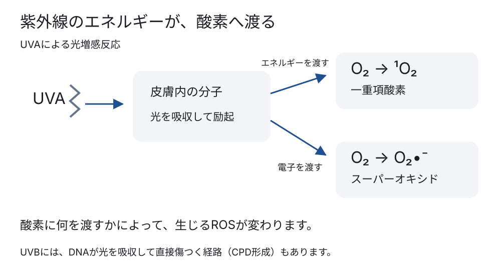
UVBもROSを増やしますが、UVBにはDNAを直接傷つける作用もあります。DNAがUVBを吸収すると、隣り合うpyrimidine塩基が結合してcyclobutane pyrimidine dimer（CPD）ができます。これはROSによる酸化とは別の光化学反応です。
3 過剰なROSは何を傷つけるのか
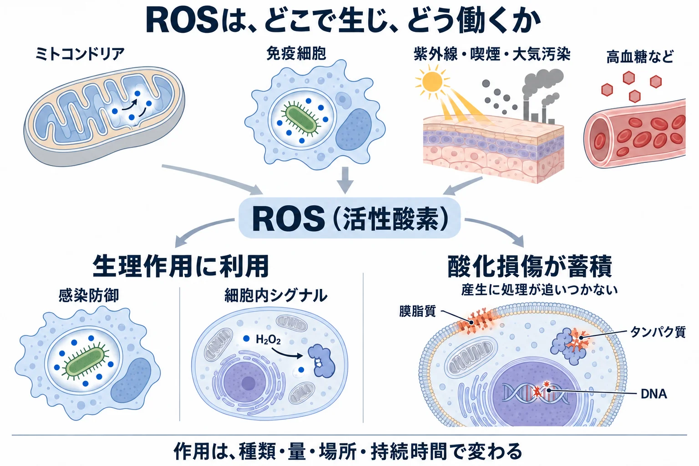
ROSが傷つける主な分子は、脂質・タンパク質・DNAです。脂質には、膜をつくるリン脂質やcholesterol、脂肪細胞の脂肪滴に蓄えられる中性脂肪（triglycerides）、皮脂のsqualeneなどがあり、いずれもROSによって酸化されえます。
| 直接酸化される分子 | 分子に起きる変化 | 細胞への結果 |
|---|---|---|
| 膜の脂質 | 細胞膜やミトコンドリアなどの膜をつくるリン脂質では、不飽和脂肪酸の部分が酸化され、隣の脂質へ連鎖する。反応性の高い分解産物も生じる | 脂質二重層の構造が乱れ、膜を介した物質・イオンの出入りを保てなくなる。強く進むと膜が破綻し、細胞死につながる（PMID 36898371）。分解産物はタンパク質やDNAにも障害を広げる |
| タンパク質 | アミノ酸の側鎖が酸化され、立体構造が変わる | 酵素、受容体、輸送体、構造タンパク質が正常に働けなくなる |
| DNA | 塩基が酸化され、DNA鎖が切れる | 修復できなければ、変異、細胞老化、細胞死につながる（→ Hallmarks of Aging） |
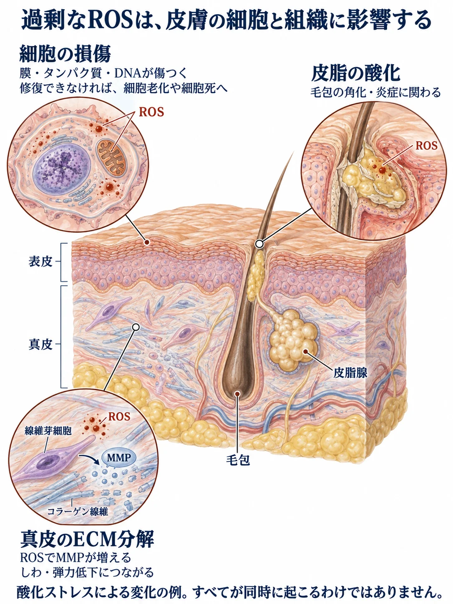
細胞の障害が、皮膚の病態へつながる
ミトコンドリアの障害は、ROSの増加につながる
ミトコンドリアもROSによって傷つきます。傷つくのは、ミトコンドリアの膜脂質、電子伝達系などのタンパク質、mtDNAです。その結果、ATP産生が低下し、電子伝達が乱れて、さらにROSが生じやすくなります（→ ミトコンドリア品質管理・ミトコンドリア機能不全と細胞老化）。
光老化：MMPがECMを分解する
皮膚では、紫外線で生じたROSが、ECMを分解する酵素のMMP（matrix metalloproteinase）を線維芽細胞に作らせます。増えたMMPが真皮のECMを分解し、光老化によるしわや弾力低下につながります（PMID 8750933）。
痤瘡：皮脂の酸化が角化・炎症に関わる
毛包では、皮脂のsqualeneが酸化してできるsqualene peroxideが、痤瘡患者の開放面皰と閉鎖面皰から検出されています（PMID 2941050）。培養keratinocyteに過酸化squaleneを加えると、NF-κBの活性化、IL-6産生、細胞増殖が起こります（PMID 16778793）。
ウサギ耳への塗布では、毛包漏斗部の過角化と面皰形成が認められています（PMID 10845185）。これらの結果から、皮脂の酸化が角化と炎症を動かし、面皰形成へつながる経路が示唆されています（→ 皮脂分泌の生化学）。
細胞老化・色素・赤みにも関わる
持続する酸化ストレスは細胞老化の誘因となり（→ 細胞老化）、melanocyteではmelanogenesisを促し（→ メラノサイトと色素形成）、免疫細胞や血管内皮では炎症と血管反応を変化させます（→ 赤みの生化学・血管と内皮）。
4 ROSを処理し、酸化障害が広がるのを防ぐ
体はROSを水などの無害な物質に変え、脂質・タンパク質・DNAへの酸化障害を抑えます。
脂質では、酸化が隣の分子へ連鎖する反応も止めます。使った抗酸化分子の一部は、電子を受け取って再利用されます。それでも生じた損傷には、修復や傷んだ成分の除去で対応します。
| 防御の役割 | 何をするか | 担うものの例 |
|---|---|---|
| ROSを処理する | スーパーオキシドをH₂O₂へ、さらに水へ変える | SOD、catalase、GPx、Prxという酵素 |
| Fenton反応を起こしにくくする | H₂O₂を処理し、反応に使われる鉄を少なく保つ | H₂O₂を処理する酵素、鉄を結合して運搬・貯蔵するタンパク質 |
| 脂質の酸化の連鎖を止める | 隣の脂質へ酸化が広がるのを止め、生じた過酸化物を処理する | vitamin E、GPX4とglutathione |
| 使った防御分子を再生する | 電子を渡し、再び反応に使える状態へ戻す | vitamin C、NADPHと再生酵素 |
酵素は、化学反応を進めるタンパク質です。ROSを処理する酵素のうち、SODは最初の変換、catalase・GPx・Prxはその後のH₂O₂の処理を担います。
上の二つは変換先を示す概略です。反応式は次節で扱います。
SODが働いてできるH₂O₂も、まだROSです。水へ変えるところまで、反応をつなぐ必要があります。
H₂O₂は、鉄と反応すると障害を広げる
H₂O₂が反応可能な二価鉄（Fe²⁺）と出会うと、Fenton反応によってヒドロキシラジカル（•OH）が生じます。
•OHは、発生した場所のすぐ近くにある脂質・タンパク質・DNAとほぼ直ちに反応し、傷つけます。専用の酵素で後から処理することが難しいため、H₂O₂を水へ変えることと、鉄を反応しにくい状態で管理することが防御になります。鉄の運搬・貯蔵の仕組みは§7で扱います。
下の図では、H₂O₂から水へ向かう防御の経路と、Fenton反応によって•OHを生じる障害の経路を見比べてください。
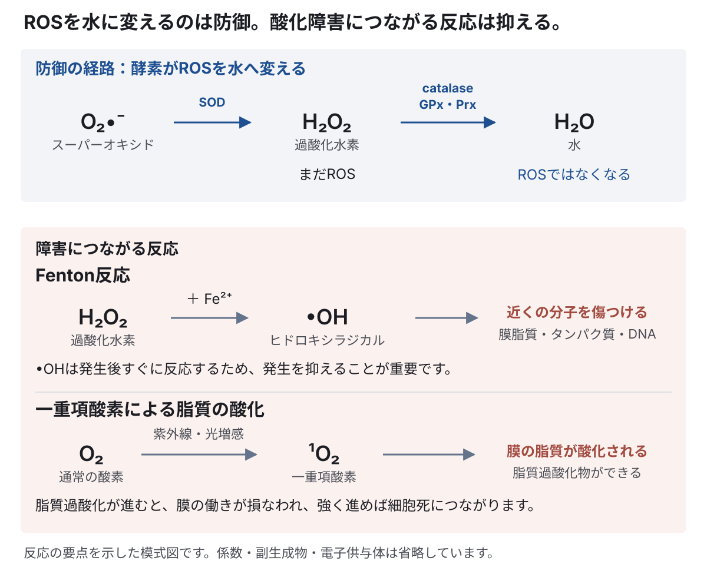
5 ROSを処理する酵素は、どう働くのか
食事のタンパク質は消化されてアミノ酸となり、細胞はそれを使って酵素を作ります。一部の酵素には、さらに銅・亜鉛・マンガン・鉄などが必要です。タンパク質が酵素の構造を作り、組み込まれた金属が反応や構造の維持を担います。
銅・亜鉛・マンガン：SODの中で働く
酸素（O₂）が電子を1個受け取ると、スーパーオキシド（O₂•⁻）になります。O₂•⁻は負の電荷を持つため、脂質膜を自由には通れません。ミトコンドリアmatrixで生じたO₂•⁻と、細胞質や細胞外で生じたO₂•⁻は、それぞれの場所にある酵素で処理されます。
この最初の処理を担うのが、SOD（superoxide dismutase）です。SODは2分子のO₂•⁻からH₂O₂とO₂を作ります。
SOD1・SOD2・SOD3は、組み込む金属と働く場所が違う
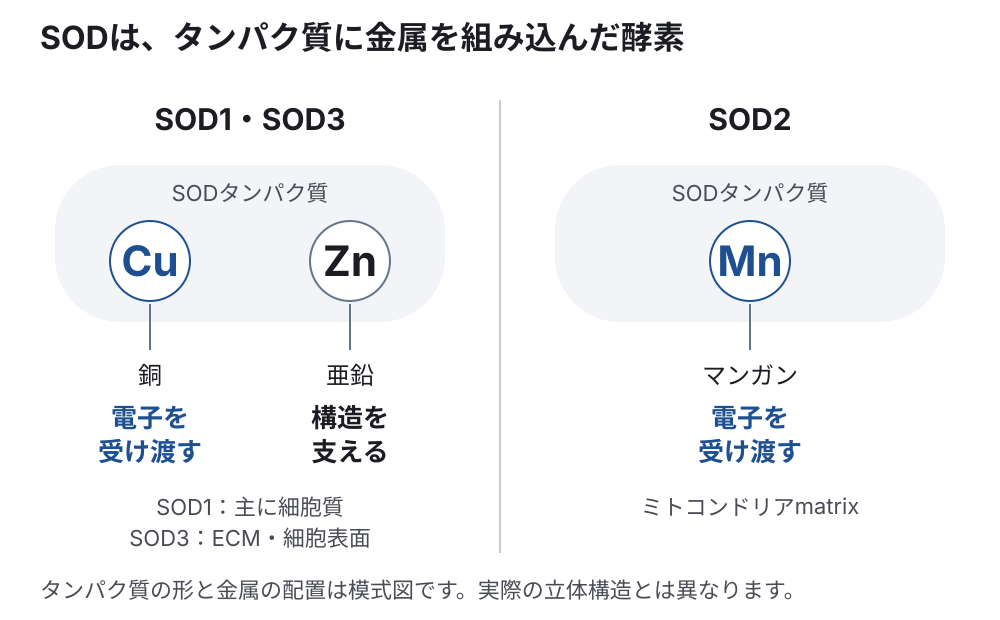
SODは、タンパク質の決まった位置に金属イオンが組み込まれたmetalloenzyme（金属酵素）です。SODの中にあるCuまたはMnが活性中心となって電子を受け渡し、O₂•⁻をH₂O₂へ変えます。ヒトには、働く場所と内部に持つ金属が異なる三つのSODがあります（PMID 12126755）。
- SOD1（Cu/Zn-SOD）は主に細胞質にあります。酵素内のCuが活性中心となって電子を受け渡し、Znが酵素の立体構造を支えます。
- SOD2（Mn-SOD）はミトコンドリアmatrixにあります。酵素内のMnが活性中心となり、電子伝達系の近くで生じるO₂•⁻を処理します。
- SOD3（extracellular SOD）はECMや細胞表面にあります。SOD1と同様に、酵素内のCuが活性中心となり、Znが構造を支えます。
SODが働くには、反応に使う金属を正しい場所へ運び、酵素へ組み込む必要があります。SOD1ではCCS（copper chaperone for SOD1）がCuを運び、SOD2ではMnのミトコンドリアへの輸送と組み込みが調節されています（PMID 21473702）。したがって、Cu、Zn、Mnの摂取量だけでSOD活性が決まるわけではありません。
H₂O₂を水へ変える：catalase・GPx・Prx
H₂O₂は、主に次の三つの酵素によって水へ変えられます。
- catalase：活性中心にheme鉄を持ち、2分子のH₂O₂を水と酸素へ分解します。
- glutathione peroxidase（GPx）：glutathione（GSH）の電子を使って、H₂O₂や脂質過酸化物を還元します。
- peroxiredoxin（Prx）：thioredoxinから渡された電子を使って、H₂O₂を水へ変えます。
これらの酵素は、細胞内に均一に分布していません。catalaseは主にperoxisomeにあり、GPxとPrxには細胞質やミトコンドリアなどに配置される複数の型があります。ROSは発生場所の近くで反応するため、どこに防御系があるかが処理能力を左右します。
catalaseの鉄は、タンパク質の中でhemeに組み込まれ、H₂O₂を処理する反応に使われます。GPX1・GPX3・GPX4には、微量元素のselenium（セレン）を含むアミノ酸、selenocysteineが組み込まれています。セレンは、これらの酵素の反応を担う部分になります。
セレン欠乏ラットの赤血球を用いた研究では、GPx活性が乏しく、glutathioneを加えても酸化障害を防げませんでした。電子を渡すglutathioneと、それを使って反応を進める酵素の両方が必要だと分かります（セレンとGPxの研究）。
6 使った防御分子を、再び働ける形へ戻す
glutathioneは、三つのアミノ酸から作られる
glutathione（グルタチオン）は、glutamate（グルタミン酸）・cysteine（システイン）・glycine（グリシン）の三つがつながった小さなペプチドです。細胞はATPを使ってこれを合成します。食事から得るアミノ酸は、collagenや酵素だけでなく、こうした防御分子の材料にもなります（ヒト赤血球のglutathione合成研究）。
GPxがglutathioneを使い、NADPHで再び使える形へ戻す
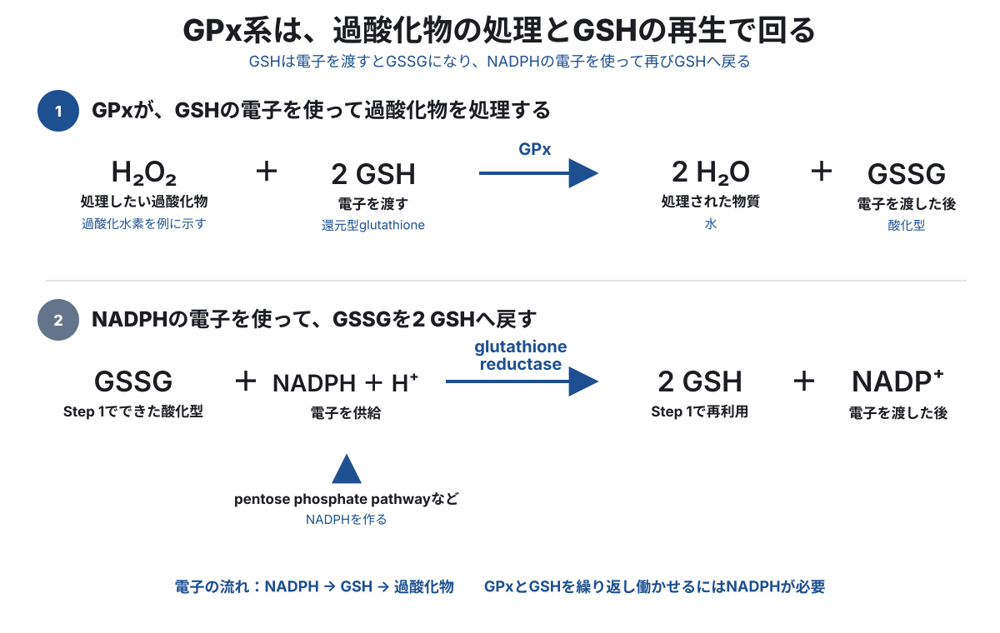
glutathione peroxidase（GPx）は、H₂O₂や脂質過酸化物へ電子を渡して、反応性の低い物質へ変える酵素です。その電子を供給するのが、還元型glutathione（GSH）です。
2分子のGSHが電子を渡すと、互いに結合して酸化型glutathione（GSSG）になります。GSSGのままでは、次の過酸化物を処理できません。glutathione reductase（グルタチオン還元酵素）がNADPHの電子を使い、GSSGを2分子のGSHへ戻します。
NADPHは、glucose-6-phosphateから分岐するpentose phosphate pathway（PPP）などで作られます（→ 解糖系）。GPx系が繰り返し働くには、反応を進めるGPx、電子を渡すGSH、GSHを再生するNADPHがすべて必要です。
GPxの型によって、働く場所と対象が違う
GPxには複数の型があり、働く場所と処理する過酸化物が異なります。
| GPx | 主に働く場所 | 主な役割 |
|---|---|---|
| GPX1 | 細胞質・ミトコンドリア | H₂O₂や小さな有機過酸化物を還元する |
| GPX3 | 細胞外・血漿 | 細胞外にある過酸化物を還元する |
| GPX4 | 細胞質・ミトコンドリア・核、細胞膜 | 膜に組み込まれたリン脂質過酸化物を直接還元し、脂質過酸化の連鎖を抑える |
GPX1・GPX3・GPX4は、§5で説明したセレンを含む酵素です（PMID 38203392）。
Prxを繰り返し働かせる仕組み
thioredoxin系は、glutathione系と並ぶもう一つの電子供給系です。PrxがH₂O₂を還元すると、Prx自身は酸化されます。thioredoxinがPrxへ電子を渡して、Prxを還元型へ戻します。さらにthioredoxin reductaseがNADPHの電子を使ってthioredoxinを再生します。
glutathione系ではGSHが、thioredoxin系ではthioredoxinが電子を運びます。経路は別でも、最後にはNADPHの電子を使って再生される点は共通しています。
7 鉄を安全に扱い、膜の脂質を守る
鉄は、結合している相手によって働きが変わる
酵素の中に組み込まれた鉄は、防御や代謝に必要です。一方、反応しやすい状態の鉄は、酸化障害のきっかけにもなります。鉄は、量とともに、どこで何に結合しているかが重要です。
鉄は必要だからこそ、吸収・運搬・貯蔵を管理する
鉄は人にとって必須の元素です。hemoglobinのhemeは酸素を運び、ミトコンドリアのcytochromeや鉄硫黄clusterは電子を受け渡してATP産生を支えます。その一方で、反応可能なFe²⁺はH₂O₂から•OHを作ります。
体は鉄をタンパク質に結合させて運搬・貯蔵し、Fenton反応に参加しやすい鉄を少なく保ちます（§4）。
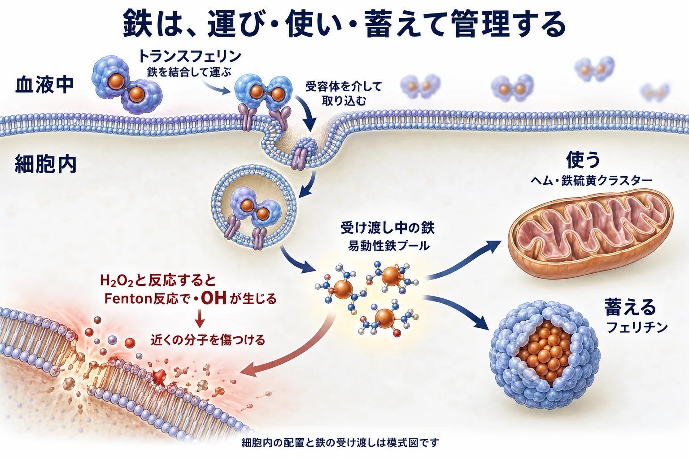
体には余った鉄を積極的に排泄して量を調節する仕組みがないため、とくに腸や貯蔵細胞から血液へ出す段階が重要です。鉄は、次のように管理されます。
- 吸収と血中への放出：小腸の細胞が取り込んだ鉄は、ferroportinを通って血液へ出ます。肝臓が作るhepcidinはferroportinを細胞内へ取り込ませて分解し、腸から血液へ入る鉄や、macrophageから再利用される鉄の量を抑えます（PMID 15514116）
- 血液中の運搬：血液中では、鉄をtransferrinに結合させて運びます
- 細胞への受け渡し：細胞はtransferrin receptorを介して、transferrinに結合した鉄を取り込みます
- 細胞内での利用と貯蔵：取り込んだ鉄をhemeや鉄硫黄clusterへ組み込み、余る鉄はferritinに収納します
細胞内には、利用先へ渡したり、貯蔵したりする前の鉄も少量あります。この鉄は小さな分子と弱く結合し、結合相手を変えながら受け渡されます。このような鉄の集まりを、labile iron pool（易動性鉄プール）と呼びます（PMID 29923582）。
本章では、この反応しやすい鉄を「遊離鉄」と呼びます。鉄が過剰なときやH₂O₂の処理が追いつかないときには、Fenton反応が起こりやすくなります。
膜を作る脂質を、vitamin EとGPX4で守る
リン脂質は細胞膜やオルガネラの膜を作り、その脂肪酸の組成は膜の性質に関わります。多価不飽和脂肪酸（PUFA）は膜の構成成分ですが、酸化されやすい性質もあります。必要な脂質を組み込み、酸化から守ることが、膜の機能を保ちます。
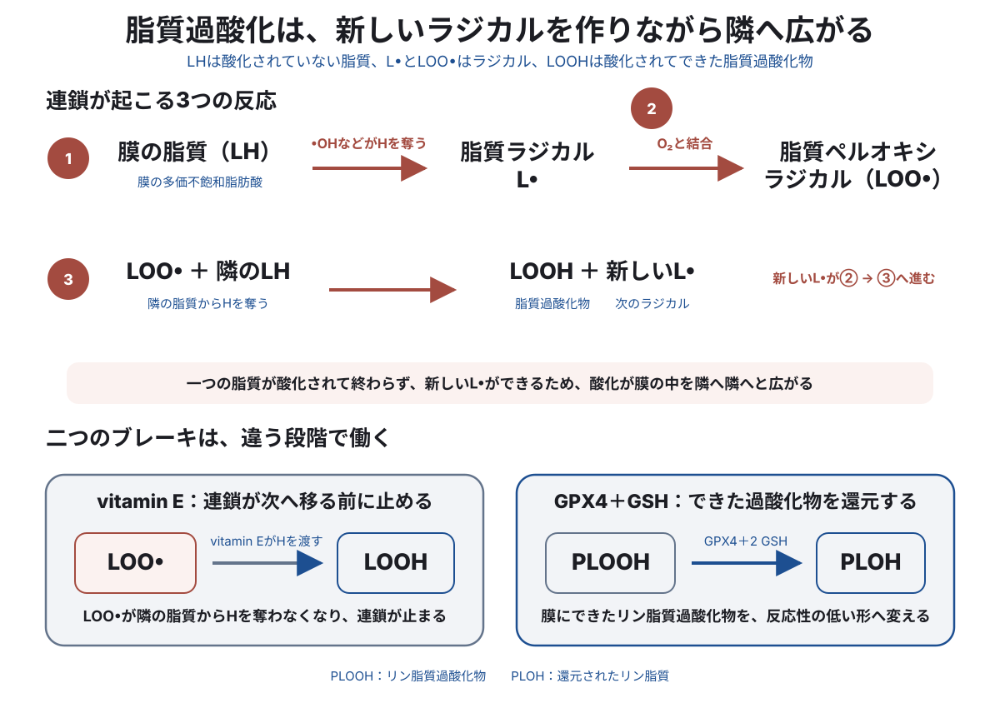
細胞膜にある多価不飽和脂肪酸（PUFA）が•OHなどに水素を奪われると、脂質ラジカル（L•）が生じます。L•はすぐに酸素と結びついて脂質ペルオキシラジカル（LOO•）になり、隣の脂質から水素を奪います。
- 脂質（LH） → L•
- L• ＋ O₂ → LOO•
- LOO• ＋ 隣の脂質（LH） → 脂質過酸化物（LOOH）＋ 新しいL•
水素を奪われた隣の脂質が、新しいL•になります。この反応が繰り返されるため、最初の酸化が膜の中を隣へ隣へと広がります。これが脂質過酸化の連鎖反応です。進行すると膜を介した物質やイオンの出入りが乱れます。
さらに、4-hydroxynonenal（4-HNE）やmalondialdehyde（MDA）などの反応性の高いaldehydeが生じ、タンパク質やDNAにも障害が広がります。
この連鎖には、二つの主なブレーキがあります。
- vitamin E：LOO•へ水素を渡し、次の脂質から水素を奪えない形にして連鎖を止めます。電子を失ったvitamin Eは、vitamin Cなどから電子を受け取って再生されます。
- GPX4＋GSH：すでにできたリン脂質過酸化物（PLOOH）を、反応性の低いアルコール型（PLOH）へ還元します。
GPX4とGSHによる処理が追いつかず、鉄に依存した脂質過酸化が蓄積すると、ferroptosisと呼ばれる細胞死が起こります（PMID 24439385；→ 細胞死）。
一重項酸素は、carotenoidが余分なエネルギーを受け取る
一重項酸素（¹O₂）は、SODやcatalaseで別の分子へ変えるのではなく、持っている余分なエネルギーを受け取ることで処理できます。carotenoidは、β-caroteneやlycopeneなどの色素分子です。carotenoidが¹O₂からエネルギーを受け取ると、¹O₂は通常の酸素（³O₂）へ戻ります。
carotenoidは受け取ったエネルギーを熱として放出し、元の状態へ戻ります。この反応をquenching（消光）と呼びます（PMID 7507987）。
8 防御を増やし、残った損傷を修復・除去する
酸化ストレスに応じて、ROSの処理能力を上げる
酸化ストレスが加わると、細胞は、ROSを処理する酵素やglutathioneを作るための酵素を増やします。これによって、細胞全体の抗酸化能力を高めます。この応答の中心にある転写因子がNrf2です。
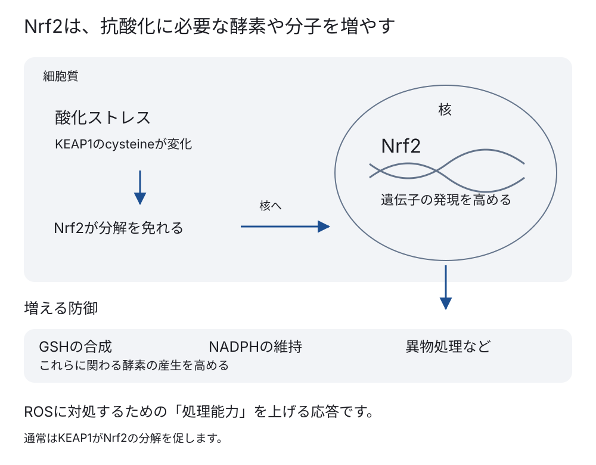
通常、Nrf2はKEAP1に捕捉され、分解へ送られます。酸化ストレスによってKEAP1のcysteine残基が修飾されると、Nrf2は分解を免れて核へ移動します。そこでglutathioneの合成、NADPHの維持、異物処理などに関わる遺伝子の発現を高めます。こうして防御に必要な酵素や分子を増やします。
レーザーや熱を使う美容医療でも、組織に一時的なROSが生じます。Nrf2を含む防御・修復反応との関係は、デバイスの章で扱います（→ 熱・光・機械刺激）。
傷んだ成分は、修復・除去する
ROSをすべて反応前に処理できるわけではありません。酸化されたDNAは修復し、傷んだタンパク質は分解し、障害を受けたミトコンドリアなどはautophagyで除去します（→ オートファジーとリソソーム）。ROSの処理と、反応後に残った損傷の修復・除去は、どちらも抗酸化防御の一部です。
防御を保つには、材料の供給と細胞内での利用が必要
防御にはアミノ酸・ミネラル・ビタミンも必要ですが、摂取した量と、必要な場所で使える量は同じではありません。 吸収、血液での運搬、細胞への取り込み、酵素への組み込みなどを経て働きます。摂取量を増やしたことだけでは、不足が解消したとは判断できません。
さらに、酵素の発現・配置、ATPやNADPHを供給する代謝、ROSが生じる量と場所も防御を左右します。酸化障害があることから栄養不足を推定したり、栄養を足せば防御が回復すると結びつけたりせず、反応全体で考えます。
サプリメントや点滴による補充の効果は、NAC・CoQ10・ポリフェノールも含め、抗酸化サプリメントと点滴で扱います。
細胞は、必要なROSを感染防御やシグナルに使いながら、余分なROSを処理します。それでも損傷が生じれば、修復・除去します。目標はROSをゼロにすることではなく、必要な産生を残したまま、酸化による障害を蓄積させないことです。
この章の到達点
- ROSは酸素に由来する複数の分子の総称で、感染防御や細胞内シグナルにも使われる。
- ROSは代謝や感染防御の過程で生じ、紫外線、喫煙、高血糖などによっても増える。
- 過剰なROSは脂質・タンパク質・DNAを傷つけ、細胞膜やミトコンドリアなどの機能を損なう。
- ROSは種類によって性質が異なり、処理の方法も異なる。
- 抗酸化防御には、酵素の働き・配置と、使った分子を再生する代謝が必要。アミノ酸・ミネラル・ビタミンもその一部を支えるが、摂取と細胞内での利用は別。
- 酸化障害を減らすことは、修復を担う細胞の機能を保つことにもつながる。補充による臨床効果は、体内での役割と分けて確かめる。
補足 フリーラジカルとROSの化学
ROSには、フリーラジカルに分類されるものと、そうでないものがあります。分類の基準になるのが、電子の状態です。
不対電子を持つものが、フリーラジカル
電子は、原子や分子の中で軌道と呼ばれる状態を占めます。一つの軌道には、spinの向きが異なる電子が2個まで入ります。同じ軌道に対となる電子がなく、1個で存在する電子が不対電子です。
不対電子を持つ原子や分子をfree radical（フリーラジカル）と呼び、化学式では不対電子を「•」で表します（IUPAC：radical）。
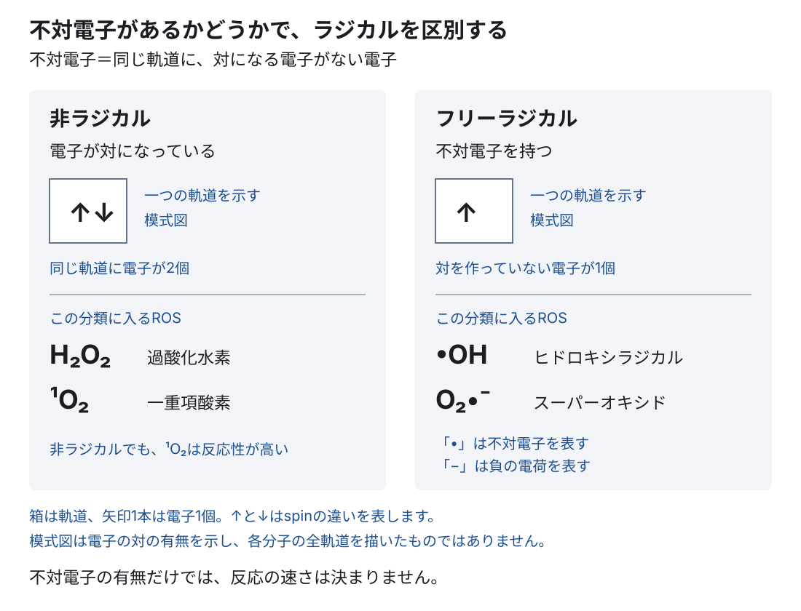
スーパーオキシド（O₂•⁻）とヒドロキシラジカル（•OH）は、ROSであり、フリーラジカルでもあります。過酸化水素（H₂O₂）と一重項酸素（¹O₂）はROSですが、不対電子を持たないため、フリーラジカルではありません。反対に、一酸化窒素（NO•）は、フリーラジカルですがROSではありません。
ROSは酸素に由来する反応性分子の分類、フリーラジカルは不対電子を持つ分子の分類です。
不対電子は、ほかの分子との電子の受け渡しや結合の形成に参加しやすいため、多くのフリーラジカルは反応性を持ちます。ただし、不対電子があれば必ず速く反応するわけではありません。
通常の酸素と一重項酸素の違い
通常の酸素（³O₂）は、不対電子を2個持つbiradical（ビラジカル）です。それでも、2個の電子のspinが同じ向きにそろっているため、多くの生体分子とは反応が進みにくく、通常はROSに含めません。光などのエネルギーを受けて電子の配置が変わると、一重項酸素（¹O₂）になります。
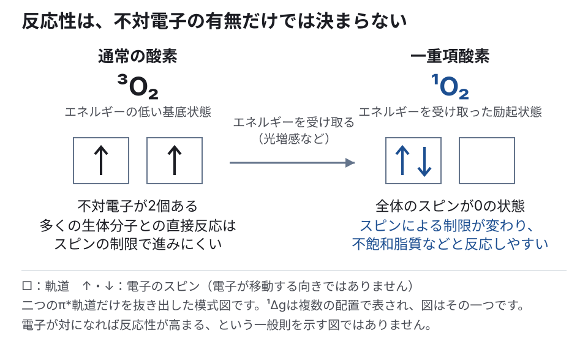
図は、違いに関わる二つの軌道と2個の電子だけを抜き出しています。一重項酸素には複数の状態がありますが、ここでは生体の酸化反応で主に扱う最低励起状態を示しています。
電子が対になっていても、反応しにくいとは限りません。反応の進みやすさは、分子のエネルギー状態と、反応する相手の電子の状態にも左右されます。通常の酸素は、多くの生体分子と直接反応するときに、電子のspinによる制限を受けます。一重項酸素では、励起によってエネルギーとspinの状態が変わり、不飽和脂質などとの酸化反応が進みやすくなります（PMID 34240450、一重項酸素の反応性を調べた計算化学研究）。
一重項酸素は非ラジカルのROSとして扱います。「ラジカルかどうか」は電子の状態の分類であり、「反応性の強さ」の順位ではありません。
ROSごとの発生と反応性を比べる
代表的なROSを、発生のしかたと反応性で比べます。
| ROSの種類 | どのように生じるか | 生体内での特徴 |
|---|---|---|
| スーパーオキシド O₂•⁻ | 酸素が電子を1個受け取って生じる | 電子伝達系や免疫細胞で最初に生じるROS。負電荷を持ち、生じた区画の中で次の反応へ進みやすい |
| 過酸化水素 H₂O₂ | 主にO₂•⁻から作られる | フリーラジカルではない。ある程度移動でき、細胞内シグナルにも使われる。Fe²⁺があると•OHの材料になる |
| ヒドロキシラジカル •OH | H₂O₂とFe²⁺のFenton反応で生じる | 非常に反応性が高く、発生した場所の脂質・タンパク質・DNAとほぼ直ちに反応する |
| 一重項酸素 ¹O₂ | 紫外線などによる光増感反応で生じる | フリーラジカルではないが反応性が高く、不飽和脂質などを酸化する |
| 脂質ペルオキシラジカル LOO• | 脂質ラジカルに酸素が結びついて生じる | 隣の脂質から水素を奪い、新しい脂質ラジカルを作って酸化を連鎖させる |
中核参考文献
- Rotruck JT, et al. Selenium: biochemical role as a component of glutathione peroxidase. Science. 1973;179:588–590. PMID 4686466. DOI: 10.1126/science.179.4073.588.
- Sies H, Jones DP. Reactive oxygen species (ROS) as pleiotropic physiological signalling agents. Nat Rev Mol Cell Biol. 2020;21:363–383.（eustress／distressの枠組み）
細胞死では、損傷を修復できなかった細胞の死に方と、その後の除去が炎症にどうつながるかを見ます。
この章の更新
- 初公開
- ROS・抗酸化システムの説明と図を見直し、重複と表示を整理
- ROSを水へ変える防御とFenton反応・脂質過酸化による障害を図で明確に区別
- 図2をROSの発生源と生理作用・酸化損傷を示す医学イラストへ変更
- GPxの図に合わせて反応式の組版と分子名の併記を統一
- ROSの皮膚への影響を皮膚断面と拡大図で示す医学イラストを追加
- 不対電子の図を左右で一貫した分類に整理し、電子の模式図とROSの例を区切って配置
- 組版と図の位置を全面調整し、不対電子・SOD・UVA・鉄の管理・Nrf2を図解
- 酸化ストレスから抗酸化へ進む構成に整え、章全体の文章を改稿